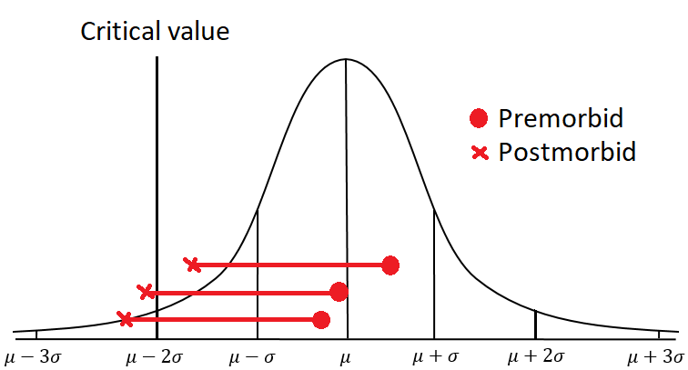

The Curious Case of the Winner's Curse

Key concepts:
- Power = the probability of finding an effect if the effect is true
Have you ever been at a psychology stats lecture listening to your teacher rambling about “power”, talking about its importance for your experiment to yield a significant result but without really explaining the “why” of it all? Well, so have I. It is usually easy enough to grasp that low power = bad, high power = good - it’s name kind of gives it away. And given that significance is often treated as the holy grail in psychology most students would want a high probability to obtain it. The advice is often to calculate a sample size based on some previous (or just predicted) effect. However, for a two group experiment with a between group design and expected medium effect (which arguably could be seen as optimistic) we would need 64 participants if we want a probability of 0.8 of detecting the effect.
For many undergraduate students (and researchers in genereal) this is just not plausible. Yet, a lot of studies and dissertations projects obtain significance anyway. In my undergrad stats course I was told that this is evidence for the great magnitude of the effect, i.e. because the power of a test mainly is influenced by the number of participants and the size of the effect, if one is low in a significant study the other must be high - right? In fact this has been the predominant view by some scholars. Recently I stumbled upon this document, a handout by Karl Wuensch, a psychology professor at East Carolina University from his statistics courses in which he states (note that this is dated 2016):
…If you were to find a significant effect of the drug with only 25 participants, that would speak to the large effect of the drug. In this case you should not be hesitant to seek publication of your research, but you should be somewhat worried about having it reviewed by “ignorant experts.” Such bozos (and they are to be found everywhere) will argue that your significant results cannot be trusted because your analysis had little power. It is useless to argue with them, as they are totally lacking in understanding of the logic of hypothesis testing. If the editor cannot be convinced that the reviewer is a moron, just resubmit to a different journal and hope to avoid ignorant expert reviewers there.
Yes, it is true that significance in a small sample would speak to the large effect found, but what Wuensch seems to miss is that it does speak to the large effect in the sample. This does not necessarily (and most probably will not) generalise to the population of interest. Perhaps one is not interested in generalising findings and solely in describing one’s sample - however, I think that most would agree that this is not what the majortiy of psychologists want.
But why does not the effect we have found in the sample generalise to the population just because we have low power? Well, intuitively, which score on an IMDB film rating would you rather trust, an average of 9/10 given by 5 people or an average of 6/10 given by 100 people? My guess is that most would say the latter - because we put trust in numbers. In science the above example translates to a phenomenon called the winner’s curse. That is the tendency to over estimate the effect size in under powered studies, due to the fact that only the studies that happen to draw a sample with a large effect will obtain a significant result. Together with publication biases (i.e. significant studies to a higher extent get published) this can yield a serious inflation of what is thought to be population effect sizes.
To demonstrate this it is useful to look at how such overestimation will affect a field “in the long run”. If we for example look at the inherently low powered field of single case neuropsychology. That is when you compare a single person (often a patient with some brain lesion) against a normative control group, on some normally distributed function - let’s say reaction time. What we want to do is to say whether or not this person has a deficit on this function. Naturally, the probability of detecting such a deficit depends on where in the distribution this patient was located prior to the lesion, i.e. the premorbid ability. Look at the expertly drawn picture below for an example:

Assume a deficit on a this reaction time of ~2 &sigma caused by some lesion – this means that in this lesioned population, a deficit will only be found 50 % of the time (if we operationalise a detection by our patient being 2 &sigma below the population mean), as can be seen in the above illustration. That is, the power of detecting this deficit will never exceed 50 %. A deficit of 2 σ can never cross the critical value if a patient had a premorbid ability above the mean (σ is here the standard deviation). The problem of premorbid ability generalises to group lesion studies as well, but more in the sense that it increases variability that can cloud inferences. This calls for the need of increasing sample sizes which often is cumbersome and, in some cases, impossible in the lesioned populations. So, what would this lead to in the long run? By running simulations of studies (in hundreds of thousands) one can approximate how such bias would affect the overall estimation given specific parameters, like the size of the deficit and the number of people in the control sample. I will include my code for such simulation in this specific field below:
win_sim <- function (nsim, deficit, ncon) {
# Matrix where each row represents observations
# on a variable from controls plus a patient
ranmat <- matrix(rnorm((ncon + 1) * nsim),
nrow = nsim,
ncol = ncon + 1)
# Induce a deficit on the first obs of each row
# and compare to the other obs on that row.
# Save the median of all found deficits.
med_def <- median(
apply(cl, ranmat, 1,
function(x) {if (pt(
((x[1] - def) - mean(x[2:ncon+1]))
/(sd(x[2:ncon+1])*sqrt(length(x)
/(length(x) - 1))),
df = length(x) - 2)<0.05) {
(x[1] - def)
} else { NA } }),
na.rm = TRUE)
# Return the average overestimation
return(- def -med_def)
}
This simulation returns the median overestimation of as many studies as you choose. If you run it for several different parameter combinations (number of controls and size of deficit). In the graph below I have taken the median of 1000 000 simulated single case studies over functional deficits ranging from 1 to 4 standard deviations for 4 different sizes of control groups.

Figure 1: Median overestimation with Crawford and Howell (1998) method, 10^6^ simulations for every parameter combination.
What becomes evident here is that even with a deficit of 2 σ where we would expect a probability of 50 %, we would get a “general” overestimation of this deficit of about 0.6 σ (which is quite alot). This is due to the fact that we cannot detect the people that have a premobrbid ability above the population mean, if not our control sample by chance happens to be drawn from the “right side” side of the distribution (that is we draw a control sample with high reaction time abilities).
This also explains the curious case when we have a small control sample and a small effect size - yielding a lower overestimation, even though we technically should have lower power. It is easier for a small sample to have a mean that differs from the population mean (think again about the IMDB score), meaning that they can be both higher and lower in an equally distributed manner. However, since our simulated patient solely is diagnosed with a deficit if they have a reaction time that is lower than the control sample mean, this will bias the result in favour of when the control sample are drawn from the right side of the distribution - making it easier to detect smaller deficits and hence the overestimation is lowered.
What else is evident is that the difference in overestimation between a control sample size of 15 and that of 70 is marginal. Meaning that single case researchers would waste their resources collecting data from larger control sample sizes, given that they want to minimise overestimation.
This is just one problem that low power yields, and in a very specific field. In the next post I will simulate the effects in more general experiments and talk about other power issues, such as how the positive predictive value is affected. However, I hope that by showing you this, it is clear that low power is not only bad because it will become harder for you to obtain significance in your undergrad thesis. It is bad because, in the long run, it can invalidate our field.
Jonathan Ö. Rittmo
M.Sc. in Human Cognitive Neuropsychology
Interests spanning meta-science → normal science → science communication → poetry → absurdity.